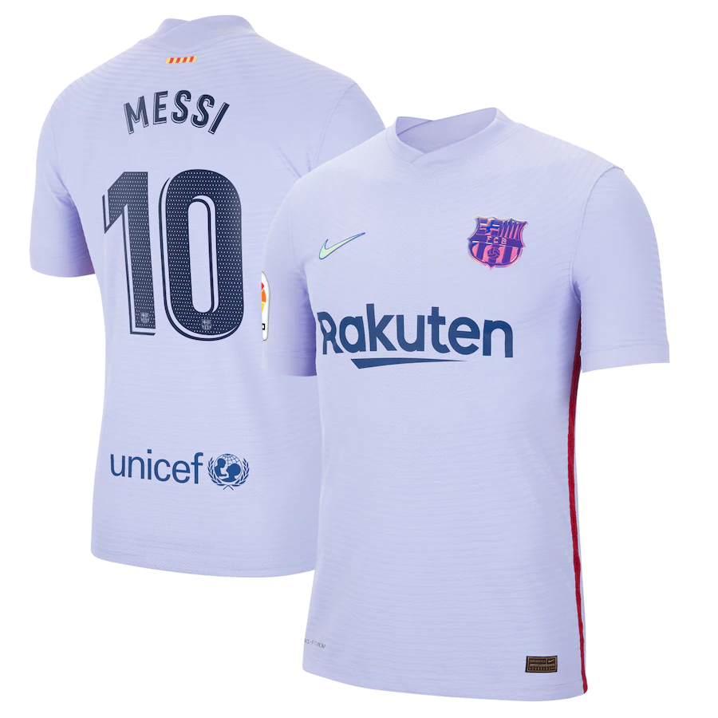

Nike is a well-known sports brand that sponsors a number of professional soccer players around the world. Some of the most famous players who represent the brand include Cristiano Ronaldo, the Portuguese forward who is widely regarded as one of the greatest soccer players of all time. Ronaldo has been a long-time Nike athlete and has helped to promote the brand through his success on the field and his widespread popularity. Another player who represents Nike is Neymar Jr., the Brazilian forward who is known for his speed, skill, and scoring ability. Other players who are sponsored by Nike include English striker Harry Kane, Belgian midfielder Kevin De Bruyne, and Egyptian winger Mo Salah. These players wear Nike soccer cleats and apparel on the field and are featured in the brand's marketing campaigns, helping to promote Nike to a global audience.
Adidas is a popular sports brand that sponsors a number of professional soccer players around the world. Some of the most well-known players who represent the brand include Lionel Messi, who has long been one of the faces of adidas soccer and is widely regarded as one of the greatest players of all time. Another player who represents the brand is Paul Pogba, the French midfielder who plays for Manchester United and the French national team. James Rodriguez, the Colombian attacking midfielder, is also sponsored by adidas, as is Brazilian forward Roberto Firmino, who plays for Liverpool and the Brazilian national team. These players are among the many talented athletes who wear adidas soccer cleats and apparel on the field and help to promote the brand to a global audience.
Finally Puma is the third best known brand that professional soccer players around the world. Some of the most well-known players who represent the brand include Antoine Griezmann, the French forward who plays for Barcelona and the French national team. Griezmann has been a Puma athlete for a number of years and has helped to promote the brand through his success on the field and his widespread popularity. Another player who represents Puma is Romelu Lukaku, the Belgian striker who plays for Inter Milan and the Belgian national team. Other players who are sponsored by Puma include Italian midfielder Nicolo Barella, French defender Presnel Kimpembe, and Mexican forward Hirving Lozano. These players wear Puma soccer cleats and apparel on the field and are featured in the brand's marketing campaigns, helping to promote Puma to a global audience.